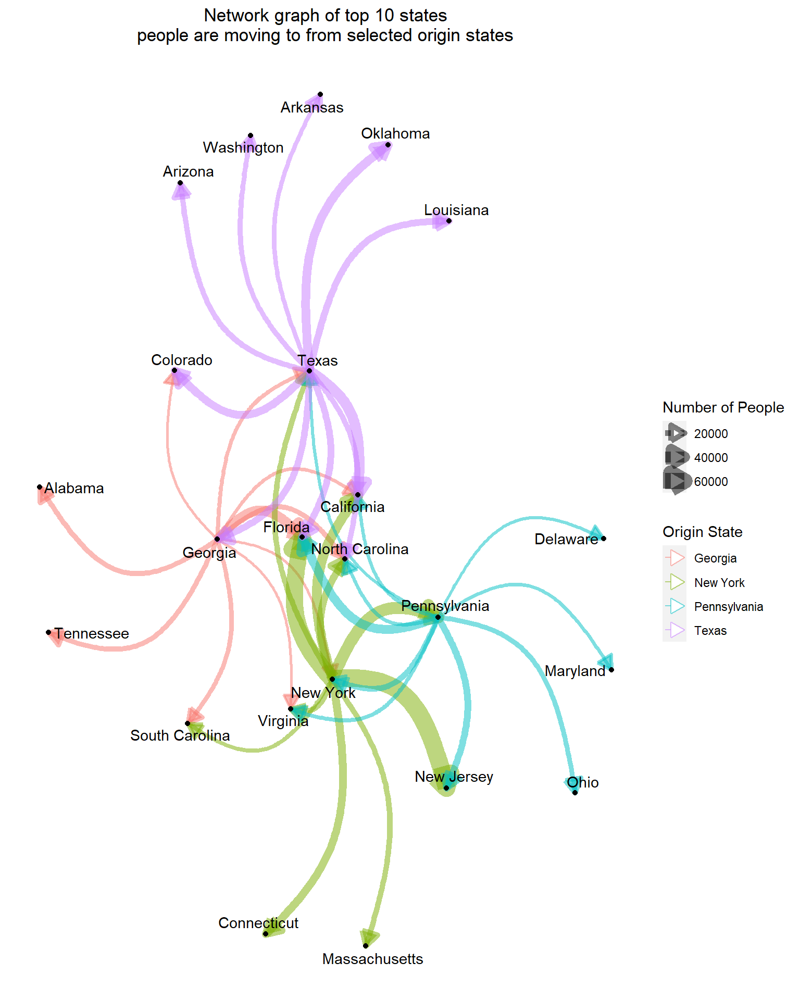

This code is written as a function so that we can use R to pass in variables, which makes the processing dynamic to the states and the number of connections you want to have in your network graph output
import pandas as pd
def process_data(source_states = ['Texas','New York','Florida','California'], num_largest = 10, debug = False):
df_raw = pd.read_excel('data/State_to_State_Migrations_Table_2018.xls')
data_pull_list = []
for row_i in range(8, 79): # loop through each 3row, this represents each jurisdiction of current residence
current_residence = df_raw.iloc[row_i, 0]
if not pd.isna(current_residence): # if there is no location here then it is a blank row
# walk through each column, representing different features about the current state
for col_i in range(2, df_raw.shape[1]):
val = df_raw.iloc[row_i, col_i] # pull the value for that column and row
# if the value is empty or not an integer then move on
# this is to avoid the repeats of row names that makes it easier to look at the table in excel
if pd.isna(val) or not isinstance(val, int):
continue
# get the state of the different residence from the column headers
diff_residence_name = df_raw.iloc[5, col_i]
# the merged cells get separated when reading into pandas
# so we need to check the right cell, if it is blank then the left cell
if pd.isna(diff_residence_name):
diff_residence_name = df_raw.iloc[5, col_i - 1]
# the variable we are getting data about
# start by looking at the highest row in the same column
# if it is empty step left until you find the variable name
i = 0
variable_name = df_raw.iloc[4, col_i - i]
while pd.isna(variable_name):
i += 1
variable_name = df_raw.iloc[4, col_i - i]
# replace instances of (continued) with nothing so variable name is consistent
variable_name = variable_name.replace(' (continued)', '')
# second half of variable name - estimate or margin of error
var_name_type = df_raw.iloc[6, col_i]
if debug == True:
print(variable_name, current_residence, diff_residence_name, var_name_type, val)
data_pull_list.append({'current_residence' : current_residence,
'prev_residence' : diff_residence_name,
'variable' : variable_name,
'variable_type' : var_name_type,
'value' : val})
# turn the list of dictionaries into pandas dataframe
df = pd.DataFrame(data_pull_list)
# remove extra 2 from current residence variable
df['current_residence'] = df['current_residence'].str.replace('2','')
# filter the data down to the elements we care about
df_trim = df[df.variable_type == 'Estimate']
df_trim = df_trim[df_trim.variable == 'Different state of residence 1 year ago']
df_trim = df_trim[df_trim.current_residence != 'United States']
df_trim = df_trim[df_trim.current_residence != 'Puerto Rico']
# trim to only previous states that are specified in the function
df_trim = df_trim[df_trim.prev_residence.isin(source_states)]
# the most important function
df_network = (df_trim
.set_index('current_residence') # set index for the variable we want to keep
.groupby('prev_residence')['value'] # group by and select column to filter on
.nlargest(int(num_largest)) # choose only the largest values
.reset_index()) # reset index so everything is a column again
# set the columns according to instructions
df_network.columns = ['source','target','count']
return df_networkR can now run the python function and get the the data into a graph object. I chose the two critical battleground states of Georgia and Pennsylvania in addition to Texas and New York.
# run python function and specify states and number of states to get back
# then add source node variable for edge coloring
df <- py$process_data(source_states = c('Texas','New York','Pennsylvania','Georgia'),
num_largest = 10) %>%
mutate(source_node = as.factor(source))
# create node list
nodes <- c(df$source, df$target) %>% unique()
# make graph object using tidygraph
graph_df <- as_tbl_graph(df, directed = TRUE, vertices = nodes)Using the ggraph package makes it easy to add attributes to edges and nodes to make a professional graph network visualization
set.seed(123462)
# start graph and establish layout
ggraph(graph_df, layout = 'fr') +
# add edges with width, color aesthetic attributes plus other static ones
geom_edge_arc(aes(width = count,
color = source_node),
arrow = arrow(type = "closed", length = unit(4, 'mm')),
alpha = 0.5,
strength = 0.4) +
# add node point and text
geom_node_point() +
geom_node_text(aes(label = name), repel = TRUE) +
# name width variable on legend
scale_edge_width(name = 'Number of People') +
# name color variable on legend
scale_edge_color_discrete(name = 'Origin State') +
# graph title
ggtitle('Network graph of top 10 states\npeople are moving to from selected origin states') +
# remove panel background and adjust title
theme(panel.background = element_blank(),
plot.title = element_text(hjust = 0.5))
We see from the graph that California, Florida, and North Carolina are all popular destinations from all four of the origin states that we considered. Strong geographic closeness leads to more migration. New Jersey and Pennsylvania are two of the top destinations for former New York residents. Each origin state sends to a number of smaller states without significant overlap.